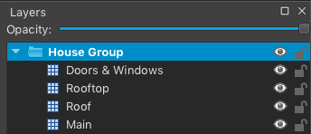

View on GitHub
View on GitHub
 Working with Layers Reference
Working with Layers Reference
Working with Layers
Once a map is loaded, you can easily interact with the layers within. Layers can be queried either by name, layer index, or type. Layers are parsed and indexed in the order they are read in your TMX document, so the bottom-most layer in Tiled will have an index of 0.
There are several ways to access layers from the SKTilemap object:
// access a tile layer with a given name
if let backgoundLayer = tilemap.getLayers(named: "Background").first as? SKTileLayer {
backgroundLayer.opacity = 1
}
// filter tile layers based on name
let allBackgroundLayers = tilemap.tileLayers().filter { $0.name == "Background" }
// return tile layers with the custom `type` property
let allWallLayers = tilemap.getLayers(ofType: "walls")
If you need to access a layer before it is rendered, implement the SKTilemapDelegate.didAddLayer(_:) method. See the Setting Up Your Scenes page for more details.
Parents & Children
The layers’ hierarchy reflects the grouping set up in Tiled. To access a layers’ parents, call the SKTiledLayerObject.parents attribute:
// access layer parents
let parents = tileLayer.parents
print(parents.map { $0.layerName })
// ["Parent 1", "Parent Group"]
Similarly, you can find a layer’s children using the SKTiledLayerObject.childLayers attribute:
// access layer children
let childLayers = tileLayer.childLayers
print(childLayers.map { $0.layerName })
// ["Child Group", "Child Layer 1", "Child Layer 2"]
Creating New Layers
Creating new layers for your content is simple:
// create a new tile layer
let newTileLayer = tilemap.newTileLayer(named: "Walls")
The resulting layer is automatically parented to the SKTilemap node, but you can also parent it to an existing SKGroupLayer group node:
// create a new tile layer and parent it to an existing group
let houseGroup = tilemap.groupLayer(named: "HOUSE").first!
let newTileLayer = tilemap.newTileLayer(named: "Walls", group: houseGroup)
Replacing Tile Data
It is also possible to replace the contents of a tile layer with an array of id values:
let treeData: [UInt32] = [ ... ]
if let treeLayer = tilemap.tileLayers(named: "Trees").first {
if treeLayer.setLayerData(treeData) {
// success, layer data was replaced
}
}
Tile Coordinates
Because all SKTiled objects are derived from SpriteKit’s default SKNode type, you can technically parent any object converted from your Tiled scene to any layer type, or have own your sprite objects interacting with SKTile sprites.
To aid in positioning your objects, every SKTiledLayerObject layer type contains methods for converting tile coordinates to and from the current projection.
// add a child node
playerLayer.addChild(player)
// set the player position based on coordinate x & y values
player.position = playerLayer.pointForCoordinate(4, 12)
It is also possible to provide an offset value in x/y for more precise positioning:
player.position = playerLayer.pointForCoordinate(4, 12, offsetX: 8.0, offsetY: 4.0)
All SKTiledLayerObject objects have convenience methods for adding children with coordinate values & optional offset and zPosition values:
playerLayer.addChild(player, 4, 12, zpos: 25.0)
See the Coordinates page for more information.
Group Layers

Group layers are a new feature in Tiled v1.0. Group layers are treated as any other layer type; adding or changing properties on a parent group will affect all child layers.
// query all of the group layers in the map
let groupLayers = tilemap.groupLayers
// access a tile layer with a given name
if let housesGroup = tilemap.getLayers(named: "Houses Group").first as? SKGroupLayer {
// add custom prop objects
for childLayer in housesGroup.allLayers() {
let lampPost = LampPostProp()
childLayer.addChild(lampPost)
lampPost.position = childLayer.pointForCoordinate(lampCoord.defaultCoords)
}
}
With the addition of group layers, SKTiledLayerObject objects now have two new properties: SKTiledLayerObject.path & SKTiledLayerObject.parents which represent the layer’s location in the Tiled scene hierarchy.

// query layers based on path
if let wallsLayer = tilemap.getLayers(atPath: "WALLS/INNER/inner_walls").first {
// get an array of the node & its parents
print(wallsLayer.parents)
// ["inner_walls", "INNER", "WALLS"]
}
Next: Working with Tiles - Index